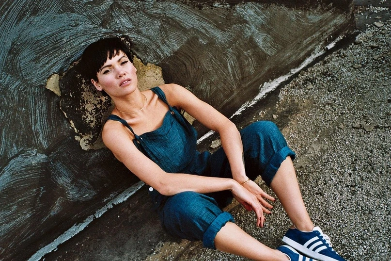

По совету Гоши Володина пополняем плейлист душевными треками, которые не играют из каждого утюга
Вы любите поп-музыку, но Адель вгоняет вас в депрессию, а криповый взгляд Билли Айлиш заставляет срать кирпичами? А может, вы просто хотите услышать что-то новенькое, незнакомое? Попробуем помочь вам расширить музыкальные рамки и обновить плейлист. Мы составили список годных поп-исполнительниц, с творчеством которых непременно стоит ознакомиться.
Snoh Aalegra
Snoh Aalegra (настоящее имя — Шери Новрози) — этническая иранка, живет в Швеции. На самом деле, в музыкальном бизнесе она с далекого 2001 года, но дебютный альбом на крупном лейбле ей удалось выпустить только в 2017-м. До выхода первой пластинки Шери безуспешно пыталась выступать под разными псевдонимами. По счастливой случайности с ней связался ныне покойный Принц и предложил поработать вместе. Его менторство помогло девушке хоть как-то продвинуться в индустрии.
Чтобы полностью проникнуться любимым стилем музыки, Snoh Aalegra переехала в Лос-Анджелес и стала сотрудничать с местными продюсерами и мэтрами жанра — рэперами Common, RZA и Канье Уэстом. Отрывок одной ее песни даже раздербанил на сэмплы Дрейк.
Гипнотический вокал Snoh Aalegra местами напоминает Уитни Хьюстон и Шаде Аду. Ее музыка — это тонкая смесь R&B с элементами чувственного соула, который переходит в мрачный трип-хоп в стиле Portishead. Звучит все это очень аутентично и напоминает «отцов» R&B, соула и фанка: Стиви Уандера, Джеймса Брауна и уже упомянутого Принца. В треках Шери радует чуткая работа над аранжировками — все инструменты и звуки очень в тему, без перебора и оверпродакшена.
Несмотря на упомянутые выше коллаборации, всемирная популярность к ней так и не пришла. Ее страница в Twitter насчитывает немногим более 65 тысяч фолловеров, а количество просмотров самого популярного клипа с трудом переваливает за три миллиона.
Сложно сказать, почему певица настолько непопулярна. Возможно, причиной может послужить ее неконъюнктурность: девушка не топит за ныне модные околополитические движухи, не бросает все силы на защиту той или иной группы населения, не акцентирует внимание на собственной сексуальности, а просто поет.
Sinead Harnett
Еще одна интересная, но малоизвестная исполнительница: на этот раз родом из Лондона. В 2011 году на нее обратил внимание один из ключевых грайм-рэперов Британии (и по совместительству рыцарь ордена Британской империи) Wiley. С тех пор Шинед успела записать четыре EP и один микстейп. Только в 2019 году она выпустила полноценный дебютник Lessons In Love.

Как и в случае со Snoh Aalegra — музыка Шинед зайдет противникам гламуризации и любителям качественного R&B. Ретроградам здесь может понравиться буквально все: начиная с поставленного вокала певицы и заканчивая звучанием композиций в целом. Особенно приметен «прыгающий» бас, который сильно выделяется на фоне довольно умиротворенного звучания. В аранжировках присутствуют интересные звуки синтезатора и лупы.
Излишней работой над звуком сейчас грешат многие, а песни Sinead Harnett — одно из приятных исключений. Все инструменты прописаны в меру, без перебора с продакшеном. При этом мелодии не звучат ни попсово, ни по-старперски. Это просто качественная музыка.
Имя Шинед периодически мелькает в зарубежной музыкальной прессе, но, к сожалению, в мейнстрим она так и не попала.
Sabrina Claudio
Эта 23-летняя певица с латиноамериканскими корнями дебютировала в 2016 году, после того как загрузила свои треки на платформу SoundCloud. Начинала Сабрина с малого — выкладывала кавер-версии в Instagram, а набравшись опыта, сконцентрировалась на оригинальном контенте и звуке.
Несмотря на нарочито умиротворенный стиль исполнения, к визуализации своего творчества певица подходит с задором: например, на фестивале Coachella 2019 Сабрина выступала в наряде из прозрачного кружевного комбинезона черного цвета без бюстгальтера.
Девушка выпустила два альбома: No Rain, No Flowers 2017 года и Truth Is, который вышел в 2019-м. Это размеренный, нарочито медленный соул с элементами трип-хопа. Ее релизы можно назвать музыкой для интровертов. Во время прослушивания складывается ощущение, будто Сабрину только-только разбудили и заставили петь — настолько просто и уютно она звучит. Минималистичный эмбиент, легкие синкопированные драм-машины звучат просто и ненавязчиво, но при этом — непримитивно.
Kimbra
Kimbra, как и ее более известная коллега Lorde, — родом из Новой Зеландии. На счету певицы три альбома. Последний и, пожалуй, самый интересный, был выпущен в 2018 году. Если вы устали от постоянных слащавых песенок и откровенной навязчивости поп-образов — вам сюда.

Стиль Kimbra — микс альт-попа, соула и джаза. Среди повлиявших на ее творчество исполнителей фигурируют разные персонажи: от Принца до Бьорк и Джеффа Бакли. Структура композиций артистки местами очень витиевата: мелодии и аранжировки лишены заезженных ходов и клише. Саунд наполнен басами и синтезаторами в стиле синтвейв.
Несмотря на то что в 2013 году Kimbra получила аж две статуэтки «Грэмми» (за совместное исполнение с соотечественником Готье песни Somebody That I Used to Know), певица находится вне мейнстрима. Ее песни, что называется, не radio-friendly, и поп-дивой ее уж точно нельзя назвать.
Kimbra — это не залихватская и мажорная попса, которую принято ставить в клубах. Зато поездить под ее треки по ночному городу — самое оно. Любителям саундтрека к фильму Drive уж точно понравится.
Sasha Sloan
Саша — американская певица с русско-ирландскими корнями. Ее настоящая фамилия — Ятченко. Хотя Саша еще не выпустила полноценный альбом, слушатель может оценить ее два EP: Sad Girl и Loser.

Ее песни довольно меланхоличны, а звучание не изобилует разными продакшен-фишками. Саша чем-то напоминает Тейлор Свифт, только куда более искреннюю. Тематика ее треков сконцентрирована на воспоминаниях о трудном детстве. Саша описывает проблемы не избито, находит к ним простой подход.
Например, в композиции Older она рассказывает, как меняются восприятие окружающего мира и взаимоотношения с близкими людьми по мере взросления, — без обиняков и нагромождения метафор.